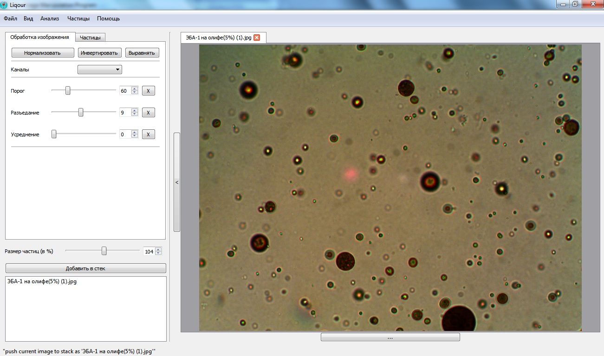
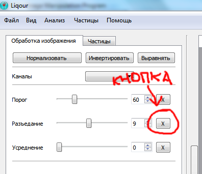
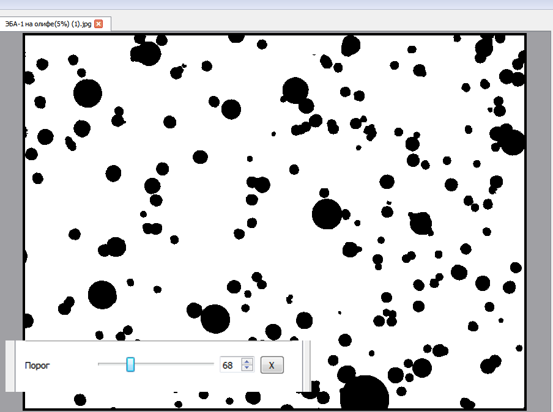
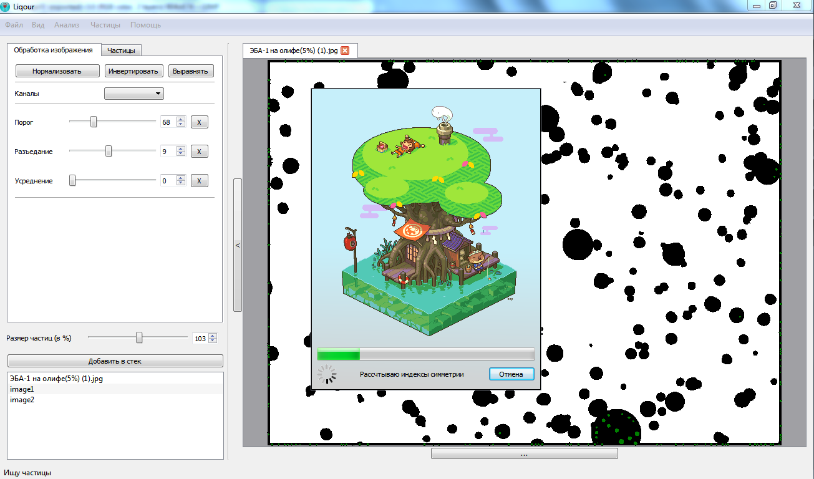
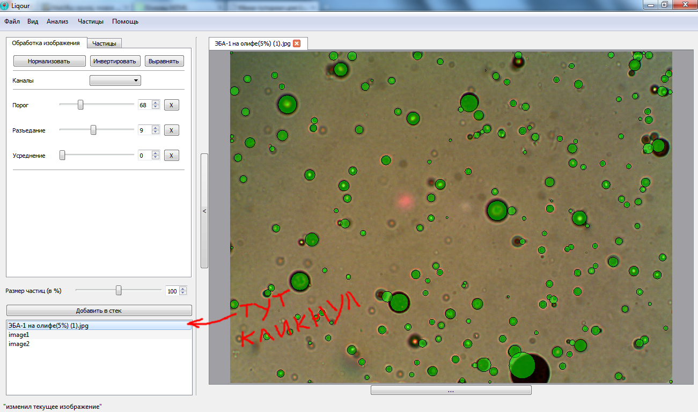
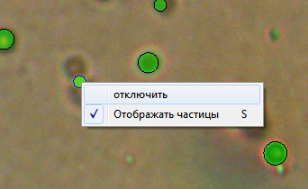
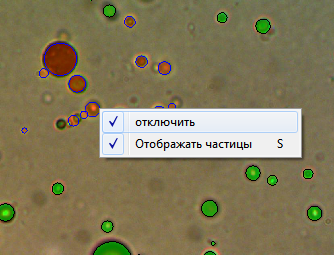
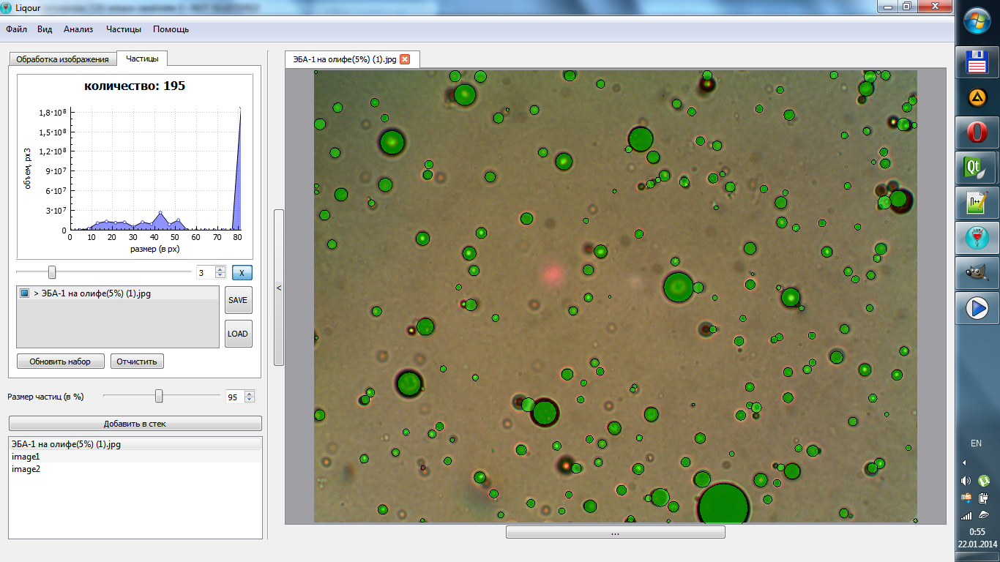
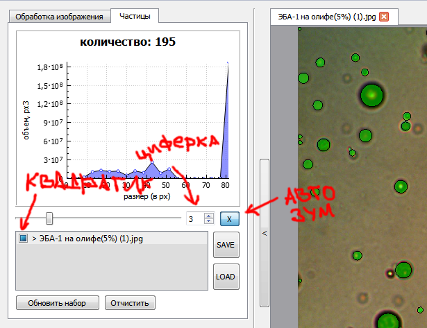

Так как полноценную документацию написать не так быстро, пока так
Обработка изображения
- Открываем изображение одним из трех способов:
- Через меню Файл / Открыть изображение
- Нажать Ctrl+O
- Перетянуть изображение (можно сразу несколько) из проводника в приложение

- Теперь подготавливаем изображение
- Cтавим ползунок
Разъедание
на 9 (наиболее оптимальное значение) и нажимаем на кнопку [X] справа от ползунка. Очень важно нажать на кнопку справа от ползунка -- таким образом ты фиксруешь изображение и все последующие операции выполняются относительно него.

- Подгоняем ползунок
Порог
так чтобы на изображении справа осталось как можно больше частиц и как можно меньше шумов. Снова тыкаем на кнопку [X] справа от ползунка Порог

- Анализируем изображение, запустить анализ можно одним из следующих способов:
- Через меню Анализ / Найти частицы
- Нажать Ctrl+E

- Теперь надо настроить размеры частиц, чтобы они как можно ближе соответствовали действительности. Слева внизу под кнопкой стек выбираем исходное изображение (самое первое).

- Двигаем ползунок
Размер частиц
пока большая часть частиц не будет соответствовать реальному размеру. Включать / Отключать отображение частиц можно нажимая S.
- Размеры отдельных частиц корректируем кликая на частицу на изображении и крутя, после, колесиком мыши.
- Если частица оказалась ложной, то кликаем на нее, нажимаем правую кнопку мыши и выбираем пункт отключить. Частица перекраситься в красный цвет.

- Если целая группа частица оказалась ложной, можно либо растащить их так чтобы они оказались на правильных местах, либо выделить их все вместе и отключить.

- Можно приближать и удалять изображение удерживая Ctrl и крутя колесико. Двигать изображение удерживая нажатым колесико мыши.
- Добившись приемлемого результат можно добавить частицы к графику, одним из способов:
- Через меню Частицы / Добавить набор
- Нажать Ctrl+A
- Переключить в левом верхнем углу вкладку
Частицы
и нажать Добавить набор

- Перейти к следующей картинки...
Работа с графиком

Ползунок под графиком, управляет кол-вом точек в графике
Циферка справа от ползунка это степень в которую возводится радиус
Кнопка [X] справа от ползунка, позволяет зумировать график чтобы он влезал в окно
Ниже находится список наборов, их можно включать и отключать с помощью черного квадратика
Кнопка Очистить очищает список наборов
Нажав правой кнопкой на любой набор, можно его удалить
Кнопка SAVE позволяет сохранить набор в текстовый файл
Кнопка LOAD позволяет загрузить ранее сохраненый набор
ЗЫ
В программе наверняка миллион ошибок, так что будь готов к непредвиденным завершениям приложения ^_^
И обо всех предложениях, пожеланиях, очепятках и ошибках пиши на mmailm@mail.ru